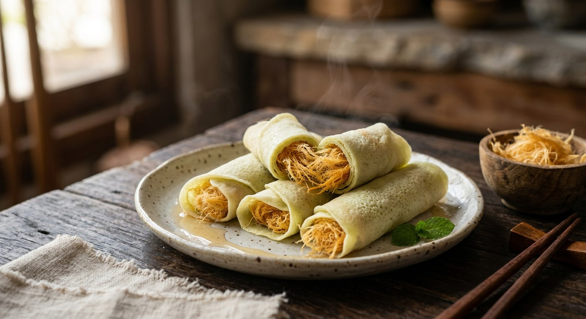

Hand-pulled brown-sugar floss — sai mai, "silk threads" — wrapped in a paper-thin crepe. Ayutthaya's signature sweet, and the reason the road into the old capital smells of caramel.

The name splits neatly: โรตี for the wrapper, สายไหม — "silk threads" — for the filling, sugar boiled and pulled by hand into a cloud of fine strands. Thai Wikipedia lists the five steps every Ayutthaya producer knows: การหม่าแป้ง (soaking the flour), การแต้มแป้ง (dabbing the wrapper onto the pan), การทำหัวเชื้อ (making the flour-and-oil paste that lets the sugar be pulled), การเคี่ยวน้ำตาล (simmering the sugar) and การดึงเส้นสายไหม (pulling the threads).
The wrapping is the first surprise: the "roti" is not the thick, flaky flatbread that shares the name. Silpa-Mag's title asks the question outright — why is it called roti when it isn't made from roti dough? The answer sits in the dish's history. The sweet arrived with Indian Muslim traders who wrapped the floss in thick roti; the thin wrapper came later, when the floss makers switched to the cheap, quick Chinese popiah sheet (แป้งเปาะเปี๊ยะ). Same wheat flour, but no sugar, no long knead — and, the sources agree, a better match: the plain, faintly salty sheet sets off the sweetness of the floss.
The floss itself is the craft. SGE Thai is blunt: it looks like two ingredients, but pulling two kilos of boiled sugar into thousands of fine threads takes real strength and practice — beginners should expect to train their arms before their first beautiful batch. The reward is a texture no machine matches: the floss is silky rather than airy, faintly chewy, tasting of caramelised sugar rather than spun air.
Ayutthaya kept the craft alive and made it a province brand: roti sai mai is an OTOP product of Tambon Khan Ham, Uthai district, and the floss-and-wrapper stalls that line the roads out of the old capital have turned the sweet into the souvenir every visitor carries home. Krua.co's profile of Bang Din — one of the old-school shops — notes the tell of tradition: the floss comes in a single golden-brown colour, straight from the simmering pan, no dye.
| Thai | English | Amount |
|---|---|---|
| แป้งสาลีอเนกประสงค์ | Plain flour | 6 cups |
| เกลือ | Salt | 1 tsp |
| แป้งมัน | Tapioca starch | 3 tbsp |
| น้ำมันพืช | Vegetable oil | 2 tbsp (plus more for the pulling paste) |
| น้ำเปล่า | Water | 4⅓ cups |
| น้ำตาลทรายแดง | Brown sugar, for the floss | 2 kg |
| หัวเชื้อ | Pulling paste — plain flour mixed with vegetable oil, rested 1 hour | enough to coat the tray |
Flavours (SGE Thai): once the pulling is mastered, tint the floss — orange, pandan, cocoa — and work sesame or crushed cashews into the wrapper dough. The old-style look (Krua.co): a single golden-brown floss, uncoloured, exactly as it comes off the simmering pan.
Who invented it. Silpa-Mag credits Bang Pia Saeng-arun (บังเปีย แสงอรุณ), a Thai Muslim from Ayutthaya who picked up the method while working in Sattahip, Chonburi, and brought it home. Thai Wikipedia credits Naphaporn Nanthasukkasem, a Thai-Chinese girl of 13 who learned the floss technique and paired it with popiah sheets. Both agree on the shape of the story — a floss maker who couldn't (or wouldn't) afford proper roti dough, and reached for the Chinese wrapper instead.
The wrapper. SGE Thai teaches the wrapper from scratch — flour, salt, tapioca starch, water, dabbed onto the pan. Wikipedia and Silpa-Mag describe the commercial wrapper as a popiah-style sheet, cooked thin and quick. The difference is practical: a from-scratch crepe is softer and stretchier; a shop-bought popiah sheet is thinner and cheaper, and the sources present it as the version the vendors actually use.
The colour of the floss. SGE Thai's recipe is built on brown sugar, and Krua.co's Bang Din sells one colour only — golden-brown, straight from the simmer. But the Ayutthaya roadside today is pastel: pink, green and yellow floss, tinted during the pull, and Pantip's comparison of the two Michelin Bib Gourmand shops (Bang Abidin-Pranom with its soft pandan-scented wrapper, Mae Pom with sesame worked into the dough) shows how far the colours and flavours have travelled from the original brown. All agree the plain brown floss is the ancestor.
This recipe is translated from the following Thai-language sources. Where they disagree, we've said so.
1. SGE Thai — "แจกสูตร โรตีสายไหม ทำเองได้ง่าย ๆ ไม่ต้องง้อร้าน" (the recipe used here — wrapper and floss) — sgethai.com
2. Thai Wikipedia — "โรตีสายไหม" (the five production steps; the popiah-wrapper history; OTOP of Tambon Khan Ham) — th.wikipedia.org
3. Silpa-Mag (Matichon) — "โรตีสายไหม ทำไมถึงเรียกโรตี ทั้งที่ไม่ใช้แป้งโรตี?" by Sarawin Panchai (the Bang Pia origin story; roti vs popiah wrapper) — silpa-mag.com
4. Krua.co — "บังดินโรตีสายไหม เจ้าเก่าอยุธยา โรตีดั้งเดิมเขาทำกันยังไง?" (the old-style single-colour floss; storage guidance) — krua.co
5. Pantip — "[CR] เปรียบมวย 2 โรตีสายไหม มิชลิน แห่งอยุธยา" (the Michelin Bib Gourmand vendors: Bang Abidin-Pranom, Mae Pom) — pantip.com